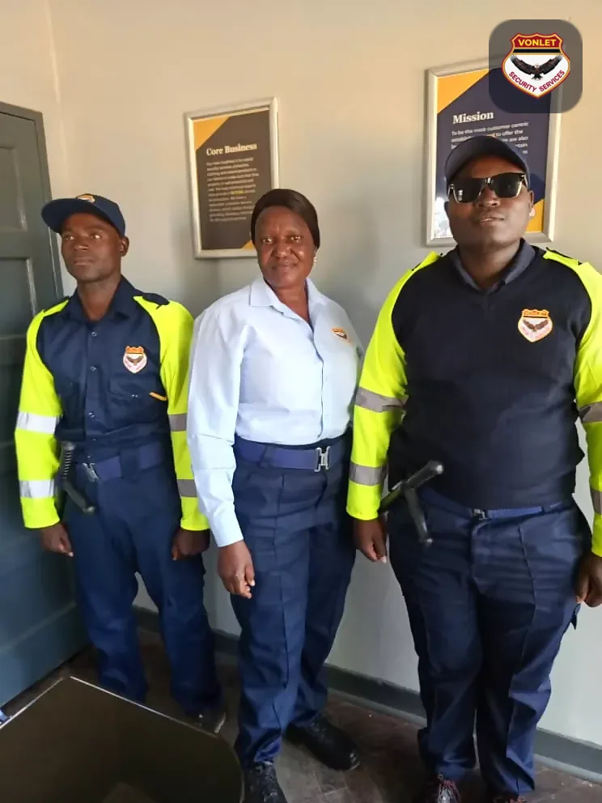
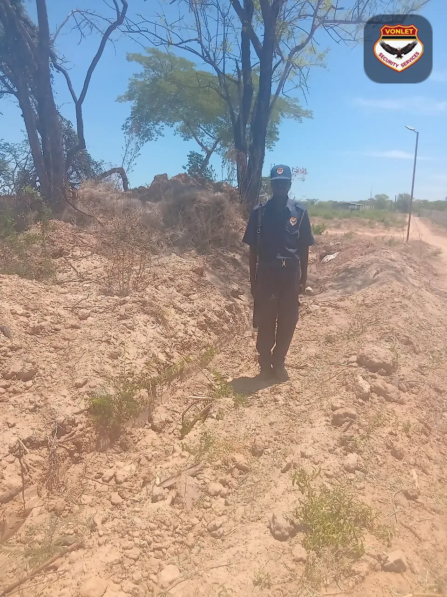
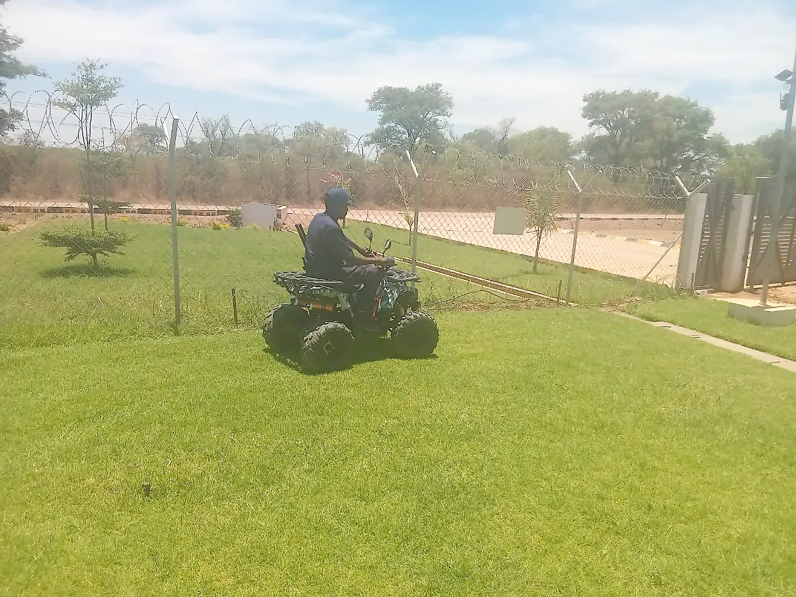

Every service line Vonlet offers — the 15 it publishes on its own site (fourteen service pages plus cash-in-transit from the home page) and 8 sector, close-protection and investigation lines the company gave us directly for this site — described here in full, on this site, without sending you elsewhere. Published blocks link back to the page they came from; supplied blocks say so in their place.
15 lines are published on vonletsecurity.co.zw and linked to their source page below; the 8 under SECTOR SECURITY and PROTECTION & INVESTIGATION were given to us by the company for this site and are awaiting publication there.
The 23 Vonlet service lines
THE CATALOGUE AT A GLANCE
Every line, photographed.
All 23 service lines in one grid. Select a photograph to open that line's full brief, its inclusions and its request button below.
Published on vonletsecurity.co.zw Supplied for this site
Static or roving guards trained to carry firearms, deployed where the risk justifies an armed presence.
Vonlet's armed officers train intensively in-house in collaboration with the Zimbabwe Republic Police and the Zambia National Police, keeping their shooting skills and handling drills current.
They are deployed to high-risk environments where valuable goods or volatile conditions demand an armed presence.
Static or roving armed posts
In-house training with ZRP and Zambia National Police
Regular shooting-skills practice
Mines, sand-poaching areas, fuel depots and high-value premises
Static and roving guards who hold a post or patrol a property, trained to handle access, theft and vandalism.
This branch of the service covers two postings. Static guards are designated to a specific area and protect it until they are relieved, escorting staff and protecting assets and infrastructure at entrances and exits.
Roving or patrolling guards move across the whole area or premises, guarding against theft and vandalism and providing a human safety presence.
03 / 23SUPPLIED BY THE CLIENT — SITE FRAME, NOVEMBER 2026
MANNED GUARDING
Secret service — undercover guards
Guards placed into the workplace discreetly, with an inconspicuous identity, to work alongside your staff.
Undercover guards are incorporated into the workplace in a discreet and diplomatic way, which clothes them with an inconspicuous identity and lets them mingle with your personnel and customers.
In the course of their duties they report back and bring an evaluation of the areas that need improvement or monitoring. Their presence saves a premises loss of time and resources, cash theft, shoplifting and vandalism.
04 / 23SUPPLIED BY THE CLIENT — SITE FRAME, NOVEMBER 2026
SECTOR SECURITY
Bank & ATM security
Guarding at branches, cash offices and standalone ATM points — presence where the queue forms, cover where the machine stands.
Officers are posted at banking premises and at standalone ATM points, where the risk sits in the few minutes a customer spends withdrawing cash. A visible uniform beside the machine discourages the observation of PIN entry, snatch-and-run theft, and the tampering and skimming that target an unattended terminal.
After hours the same post keeps the machine and its surroundings under watch. Attempted break-ins, loitering vehicles, blocked sight-lines and damaged casing are reported to the control room while there is still time to act, and every visit is written into the occurrence book so the client has a record of cover, not a promise of it.
Static posts at entrances, queues and cash desks
Day and after-hours cover at ATM points
Deterrence of snatching, skimming and tampering
Queue and door management at peak hours
Logged visits and incident reporting to the control room
Request this service This line was given to us by the company for this site and is not yet published on vonletsecurity.co.zw.
05 / 23SUPPLIED BY THE CLIENT — SITE FRAME, NOVEMBER 2026
SECTOR SECURITY
Warehouse & logistics security
Gate, yard and stock protection for warehouses, depots and distribution points, where the loss is usually in the goods.
A warehouse is guarded at three points: the gate, the yard and the stock itself. Officers register vehicles and visitors, check outbound loads against the paperwork that should accompany them, and keep the fence line walked, so a load cannot leave the premises without a document to match it.
Because most loss in distribution is internal, posts are paired with discreet checks — seal numbers, weighbridge tickets, night-shift movement and the loading bays that sit outside a supervisor's eye. Mobile patrols on Vonlet's vehicles, quad bikes included, cover the perimeter ground a fixed post cannot see from its chair.
Gate and boom control with a vehicle register
Load, waybill and seal verification
Roving patrols of yard, racks and fence line
Night-shift and after-hours stock cover
Mobile quad-bike and vehicle patrol
Request this service This line was given to us by the company for this site and is not yet published on vonletsecurity.co.zw.

06 / 23SUPPLIED BY THE CLIENT — SITE FRAME, NOVEMBER 2026
SECTOR SECURITY
Retail security
Store-floor, forecourt and cash-office guarding that cuts shrinkage without turning the entrance into a checkpoint.
Store detection works best when customers stop noticing it. A uniformed officer holds the entrance, the trolley bay and the queue lines, while discreet cover on the floor — the undercover guards described above work this sector in particular — watches fitting rooms, high-value shelves and the points where security tags are defeated.
The other half of the job sits outside trading hours: deliveries in the early morning, the cash office before a banking run, alarm response once the shutters are down, and the parking area after dark, when the store is closed but the stock inside is not.
Uniformed presence at the door and on the floor
Discreet cover for fitting rooms and high-value stock
Tag, till and cash-office watch
Delivery and collection hours covered
After-hours perimeter, parking and alarm response
Request this service This line was given to us by the company for this site and is not yet published on vonletsecurity.co.zw.

07 / 23SUPPLIED BY THE CLIENT — SITE FRAME, NOVEMBER 2026
SECTOR SECURITY
Farms & mines security
Boundary, access and materials control over ground too large to walk — farms, ranches, mines, and sand and aggregate operations.
On a farm or a mine the perimeter is the problem: kilometres of fence, gates that are meant to be open, and value that is in the ground, in a dam, on a weighbridge or in a truck. Vonlet works the boundary on foot and by vehicle, posts officers at the gate that matters and roves the rest rather than leaving it to chance.
Higher-risk ground — ore, fuel, explosives stores, and sand and aggregate operations where the material itself can be carried off in a wheelbarrow — is covered by armed officers trained in-house with the Zimbabwe Republic Police and the Zambia National Police. Patrol routes and check-times are set by the site risk assessment, not by a fixed timetable an intruder can learn.
Perimeter patrols on foot and by vehicle
Gate control and a stock movement register
Armed cover for ore, fuel, explosives and aggregate
Weighbridge and load-out checks
K-9 support for veld, dam and store searches
Request this service This line was given to us by the company for this site and is not yet published on vonletsecurity.co.zw.

08 / 23SUPPLIED BY THE CLIENT — SITE FRAME, NOVEMBER 2026
SECTOR SECURITY
Residential security
Estates, complexes and private homes — gatehouse control, patrols of the common ground and response in the hours a house is empty.
Most residential loss happens inside a two-hour window: the school run, the workday, the house empty and the gate propped for a contractor. Vonlet mans the gatehouse, screens and registers visitors and tradespeople, and patrols the boundary and the common ground between them — on foot, or by quad bike where an estate is too large to walk twice an hour.
Where there is no gatehouse, the service is a roving patrol with a logged arrival time, keyholding, and an agreed response to an alarm, plus cover for staff and service entrances and for the days a family is away. House rules, gate codes and the neighbours' sensitivities are written into the standing orders before the first shift.
Gatehouse duty with a visitor and contractor register
Roving patrols of boundary and common ground
Keyholding and alarm response
Absence, holiday and staff-hours cover
Standing orders agreed with the complex or owner
Request this service This line was given to us by the company for this site and is not yet published on vonletsecurity.co.zw.
09 / 23SUPPLIED BY THE CLIENT — SITE FRAME, NOVEMBER 2026
SECTOR SECURITY
Functions & event security
Guarding at weddings, funerals, launches and corporate functions — the guest list, the parking, and the property afterwards.
A function is a short, sharp security problem: a guest list that changes at the door, cash and gifts gathered in one room, alcohol, a crowded parking area, and a property at its most exposed the moment the last guest leaves. Vonlet crews are briefed to the list, control entry, keep the vehicles watched and stay on after the cleaning starts.
Crews can be deployed as visibly as a row of uniforms at the gate, or quietly enough to stay out of the photographs when a family asks for that. Dogs are available on the same booking for perimeter and parking coverage where the numbers justify them.
Guest-list and gate control
Parking, vehicle and gift-room watch
Visible or discreet deployment by brief
Crowd and bar-queue management
After-event perimeter cover and sweep
Request this service This line was given to us by the company for this site and is not yet published on vonletsecurity.co.zw.
10 / 23SUPPLIED BY THE CLIENT — SITE FRAME, NOVEMBER 2026
PROTECTION & INVESTIGATION
Private escorts
Escorted movement of people and valuables — principals, families and high-value consignments — with a protection officer in the vehicle.
Escort work covers the journey rather than the address. An officer travels with the principal, the family or a valuable consignment from door to door, on foot or in the client's own vehicle or one of Vonlet's. Routes are planned before wheels move, pickup and drop-off points are checked first, and the detail of the day — who is met, where the vehicle stops — stays with the crew rather than the front desk.
It is the service clients add when a fixed guard cannot follow them: an airport transfer, a business trip between towns, a payroll or valuation run, a school move at a time when the risk is personal rather than property. Escorts are unarmed or armed according to the threat assessment agreed with the client.
Door-to-door protection of people in transit
Route planning with alternates, points checked first
Foot escort or vehicle escort, unarmed or armed
Airport transfers and inter-town travel
Cash, valuation and high-value consignment escort
Officers briefed to confidentiality, vetted as in training
Request this service This line was given to us by the company for this site and is not yet published on vonletsecurity.co.zw.
11 / 23FROM THE COMPANY ARCHIVE
PROTECTION & INVESTIGATION
Private investigations
Surveillance, verification and internal enquiry, closed out with a report written to be usable by an insurer, an advocate or the police.
Investigations answer the questions a guard cannot: who is shorting the till, who is passing information out of the yard, what an applicant was doing before they sent you the CV that arrived this morning. The work is surveillance, enquiry and verification, run against a brief agreed in advance — scope, dates, ground and what may and may not be recorded.
Every assignment closes with a written report: times, places, photographs, statements and the records checked, in a form that can be handed to an insurer, an advocate or the police. The enquiry is run alongside a guarding contract, never through the crew holding it, so the officers on site are not investigating their own shift. Enquiries stay within the law — no interception of communications, no entry to private premises.
Covert surveillance and observation
Background, employment and reference verification
Internal theft, shrinkage and fraud enquiries
Evidence handling with an unbroken continuity record
Written report for insurer, advocate or police
Liaison with the Zimbabwe Republic Police where a case opens
Request this service This line was given to us by the company for this site and is not yet published on vonletsecurity.co.zw.
12 / 23FROM THE COMPANY ARCHIVE
K-9
Dog services
Watch and attack dogs supplied to clients, with handlers and kennel support behind them.
Because of their attentive and intimidating nature, dogs have become a substantial part of the security domain. Vonlet supplies clients with watch and attack dogs, which help bring the level of crime down and meet head-on any threat posed to a client or their property.
Vonlet's service dogs are also trained to assist guards and other law-enforcement officers: drugs and explosives searches, locating missing people and finding crime-scene evidence.
Motivational training for the dogs and for the handlers who work with them.
The dog section uses motivational training techniques, in line with current international approaches, to teach its dogs to obey their handlers and apprehend intruders. The kennels breed Boerboels, German Shepherds and Rottweilers — all well suited to guard work.
Training starts with the dog responding to its handler's commands and progresses to pursuing an intruder who runs away, even inside a building. Handlers are trained alongside their dog, because the professional handling and control of the dog matters as much as the dog itself. Welfare at the kennels is treated as paramount.
Boerboels, German Shepherds and Rottweilers
Motivational training methods
Obedience and apprehension drills
Handlers trained with the dog they will work with
Deployed to homes, businesses, farms, mines and schools
Camera systems specified, installed and maintained by Vonlet's technical team.
CCTV lets you keep an eye on everything happening in a building through cameras. Vonlet supplies and installs these systems, and the components behind them are worth knowing.
Image sensors convert light into electronic signals: CCD sensors are more sensitive in poor light, while CMOS sensors are the cost-effective option and a megapixel CMOS can outperform CCD on quality. Video encoders bring analogue cameras onto a network so a site can use modern features and cheaper hardware. Recorders split into digital video recorders, which process footage themselves and suit analogue cameras, and network video recorders, which encode at the camera and stream for storage and remote monitoring with IP cameras.
Vonlet supplies and installs access control systems. The published types are discretionary access control (DAC), where leadership sets who may pass, rule-based access control, which decides by policy, and identity-based access control, which decides by the person presenting credentials.
Alarm systems engineered to tell you the moment an intrusion is detected.
The system comprises a control panel, an LED or LCD keypad, pet-immune and general sensors, magnetic contacts for windows and doors, and sirens. It is built to alert clients in cases of invasion or intrusion.
17 / 23SUPPLIED BY THE CLIENT — SITE FRAME, NOVEMBER 2026
ELECTRONIC SECURITY
Rapid response systems
Your alarm linked to Vonlet's control room, with a reaction team behind it.
The client's alarm system is linked to Vonlet's rapid response control room. In the event of a break-in, the report is relayed to the control room and automatically triggers the reaction team, which responds to the premises within reasonable time and inspects for any burglary.
A real-time online guard tour built on NFC, beacon and QR-code tags.
Staff scan tags placed on locations and assets, and the monitoring centre is informed in real time about incidents and events. Every QR-code, NFC tag or beacon scan travels to the system's web application through a cloud server.
Each guard carries a unique technology identity. The smartphone becomes the work tool: photographs, voice messages, notes and signatures can be attached to the scanned item, and the guard or worker can inform facility managers immediately who is responsible for the asset or location. Departments, locations, warehouses, transport areas, airports, stores and remote areas can all be brought under the same control.
NFC, beacon and QR-code checkpoints
Real-time reporting to the monitoring centre
Photos, voice notes and signatures per scan
Warehouses, stores, transport hubs and remote sites
19 / 23ILLUSTRATIVE CONCEPT IMAGE — NOT A COMPANY PHOTOGRAPH
TRAINING & SAFETY
Fire drill
Guards keep escape routes usable and fire equipment serviceable.
The guard on site ensures that fire extinguishers are neither expired nor damaged, clears corridors of impediments so people can evacuate quickly, and makes sure exit doors are kept clear and accessible to anyone who needs to leave.
The frame below is deliberately the equipment and nothing else: what a Vonlet officer checks on a fire round is the extinguisher in its bracket, its seal and its service tag, the pressure reading, and the path to the exit door.
20 / 23ILLUSTRATIVE CONCEPT IMAGE — NOT A COMPANY PHOTOGRAPH
TRAINING & SAFETY
First aid
Life-saving training for the first minutes of a medical emergency.
First aid is the immediate treatment of a patient before trained medical personnel can take over. It is a core part of guard training at Vonlet rather than an optional extra, because it is the technique that keeps a casualty alive at the scene of an emergency.
The frame below shows the kit and nothing else, because the kit is the part the guard owns: the dressing, the tape, the gloves and the sling that have to be packed, in date and reachable before an ambulance can be.
Vetting first, then a two-week training programme before any guard is deployed.
Vonlet probes every person it employs, with the emphasis on guards. Vetting is a pre-requisite and happens before any Vonlet training, in sequence: fingerprints are taken as an inspection of criminal records; every applicant must have gone through “O” Level; previous employment with another manned security service is checked; at least three references are required, excluding the previous employer; and the curriculum vitae is scrutinised to confirm its authenticity.
Successful applicants then complete a two-week training programme covering basic security guard training, firearm handling, dog handling, first aid and fire drill.
Additional training and licensing before an officer may carry a firearm on duty.
To become an armed security guard and carry a firearm on duty, an officer must complete additional hours of training specialising in firearm handling and safety, on top of the basic guard course. Those hours include learning how to handle and fire a weapon.
On completion the officer is issued a card that allows them to legally carry a firearm while on duty. Requirements differ between jurisdictions, and all of them involve a rigorous, multi-point background check before anyone is qualified to carry.
23 / 23ILLUSTRATIVE CONCEPT IMAGE — NOT A COMPANY PHOTOGRAPH
CASH SERVICES
Cash-in-transit
Management of the cash collection service, from task assignment to accounting for every book.
Cash-in-transit provides management of the cash collection service for CIT staff: the assignment of tasks, the selection of routes, and the accounting of all books. Runs are made with Vonlet's branded fleet.
Vonlet publishes CIT as a core service on its home page rather than as one of the fourteen individual service pages, which is why it completes the fifteen lines the company publishes — the eight sector, escort and investigation lines below it were given to us for this site directly.